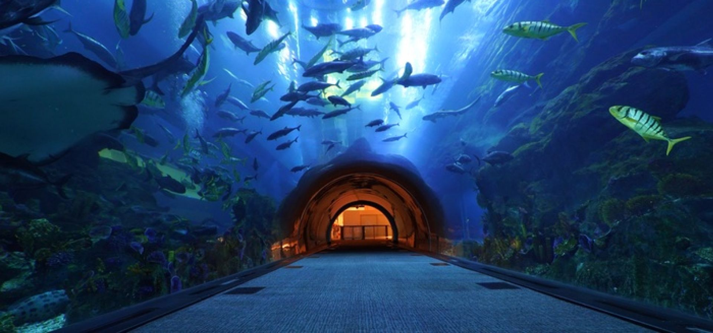

Dubai Aquarium and Underwater Zoo
Dubai Aquarium & Underwater Zoo is open 365 days a year.Want to explore one of the largest and most stunning aquariums in the world? Don’t miss the giant 10 million-litre tank at the Dubai Aquarium and Underwater Zoo, which contains more than 33,000 aquatic animals and the largest collection of sand tiger sharks anywhere. Rising to the third floor of The Dubai Mall, the aquarium is home to 140 species of sea life and offers many incredible ways to experience the underwater world. Stroll through a 48-metre tunnel, with the aquarium enveloping you from overhead and around. It’s a complete fish-eye view, with sand tiger sharks and stingrays swimming overhead. You can also take a glass-bottom boat tour, have a mermaid makeover, get wet in a snorkelling cage and even don an oxygen tank to go swimming with the sharks. The zoo portion of the facility has a surprising range of animals, including 'King Croc', weighing an incredible 750 kgs and measuring over 5 metres long.
Desert Safari

Experience the safari in the morning! For people who are short on time or have busy evenings should try the morning safari for adventure and Dune bashing. A car will pick you up in the morning around 9 AM and take you straight to the desert. Here you will enjoy 20 minutes of awesome dune bashing with experienced drivers and then head back to camp. At the camp you also have options to try quad biking, camel rides and sand skiing. Water and soft drinks are complimentary at the camp. Thereafter the car drops you to your hotel. The whole experience takes approximately 2 hours. A must for everyone who is visiting UAE. A memory to share with your family and friends back home, this is one safari you can’t do back home. We recommend it highly and it will be worth every penny spent! The Evening tour starts in the afternoon across the desert of Dubai with several stops for photography. During an exciting dune drive you arrive at the first destination for a beautiful sunset. They stop to watch the sunset and continue with Dune bashing to finally reach the campsite. Here you have the opportunity to do a camel ride, sand boarding and try out a henna design on hand or feet. After working up an appetite you get to enjoy a delicious barbecue dinner and shisha (the famous Arabic water pipe). You also get to enjoy our Fire show and Tanura show performance around the campfire by starlight.

A minimum of 2 people would make this safari exceptionally enjoyable but, if you are alone, do not hesitate to book this overnight desert safari Dubai. The overnight Dubai safari is an extension of the evening desert safari and commences once the guests of the evening safari have left the campsite. You can relax at the overnight tent during the night and enjoy the starry desert experience. Tent along with mattresses, pillows and blankets will be provided. We do have washroom and shower facilities at the desert safari camp. You will be served fresh breakfast in the morning along with tea/coffee before you head back to your hotel. The ideal safari for those who wish to skip the dune bashing and directly head towards the desert camp to explore the activities there. The safari is recommended for those with any back problems, pregnant women, and families with young children, elderly and those with any heart related problems. You will be picked up from your hotel or place of residence and brought directly to the desert safari campsite where there are various for all age groups. You can choose between camel rides, quad bikes, sand-boarding, dressing up in traditional Arabic clothing, clicking pictures with the falcon, getting a henna tattoo, smoking a bubble/shisha, or just relaxing and enjoying the desert sunset. Live entertainment shows like the tanoura dance show, belly dance show and fire show is something you can enjoy along with your dinner. Buffet dinner includes a variety of veg. and non-veg options including appetizers, main-course and something sweet too. A special Arabic style BBQ is not to be missed
The Fountain And Light Show
You have to see it to believe it… Downtown Dubai has become famed for its Dubai Fountain show and Burj Khalifa light show. Fans from around the world will flock to witness the stunning spectacle with their own eyes. In exciting entertainment news, the world’s tallest building has something special in store for the Eid Al Fitr celebrations this week. A brand new fountain and light show will take place at 8pm each night throughout the long Eid weekend. And the best thing about these shows is that they are free!You do not have to pay to come and view these beatiful and mind blowing performances.